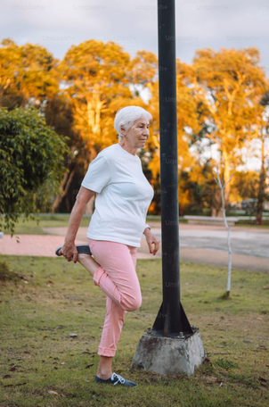

Diététique thérapeutique
Un accompagnement nutritionnel personnalisé pour mieux vivre avec des pathologies comme le diabète, le cholestérol ou les troubles digestifs.

Qu’est-ce que la diététique thérapeutique ?
La diététique thérapeutique vise à adapter l’alimentation en fonction de pathologies spécifiques, afin d’améliorer la santé, de soulager les symptômes et d’accompagner un traitement médical. Elle repose sur des recommandations nutritionnelles validées, toujours personnalisées selon le diagnostic, les habitudes de vie et les besoins du patient.
À qui s’adresse cet accompagnement ?
Cet accompagnement s’adresse aux personnes ayant reçu un diagnostic médical (diabète, hypercholestérolémie, hypertension, surpoids, obésité, troubles digestifs, troubles du comportement alimentaire…) ou sortant d’une hospitalisation. Il vise à apporter des repères nutritionnels adaptés, en alliant efficacité, confort et autonomie.

Quels bénéfices attendre ?
Une alimentation adaptée peut jouer un rôle majeur dans la gestion d’une maladie chronique ou dans la prévention de complications. Grâce à un suivi individualisé, vous apprenez à mieux comprendre votre pathologie, à adapter vos repas au quotidien, et à retrouver un équilibre alimentaire compatible avec votre santé, sans culpabilité ni régime strict.